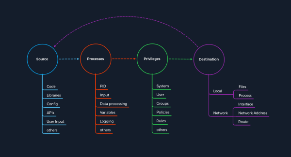

CoreFTP <727 (CVE-2022-22836)
CoreFTP before build 727 (
CVE-2022-22836)
The FTP service that does not correctly process the HTTP PUT request and leads to an authenticated directory/path traversal, and arbitrary file write vulnerability. This vulnerability allows us to write files outside the directory to which the service has access
Vulnerability The actual process of CoreFTP misinterprets the user's input of the path.
This leads to access to the restricted folder being bypassed.
As a result, the write permissions on the HTTP PUT request are not adequately controlled, which leads to us being able to create the files we want outside of the authorized folders
Exploitationcurl -k -X PUT -H "Host: <IP>" --basic -u <username>:<password> --data-binary "PoC." --path-as-is https://<IP>/../../../../../../whoops
-X PUT → raw HTTP PUT request
--basic -u <username>:<password> → basic auth
--path-as-is https://<IP>/../../../../../whoops → the path for the file
--data-binary "PoC." → content of the file
-H "Host: <IP>" → specify the host header, with the IP address of our target system
Vulnerability Explained with the Pattern Template1. First part of the exploit: Directory Traversal
| Step | Directory Traversal | Concept of Attacks - Category |
|---|
| 1. | The user specifies the type of HTTP request with the file's content, including escaping characters to break out of the restricted area. | Source |
| 2. | The changed type of HTTP request, file contents, and path entered by the user are taken over and processed by the process. | Process |
| 3. | The application checks whether the user is authorized to be in the specified path. Since the restrictions only apply to a specific folder, all permissions granted to it are bypassed as it breaks out of that folder using the directory traversal. | Privileges |
| 4. | The destination is another process that has the task of writing the specified contents of the user on the local system. | Destination |
Up to this point, we have bypassed the constraints imposed by the application using the escape characters (../../../../) and come to the second part, where the process writes the contents we specify to a file of our choice. This is when the cycle starts all over again, but this time to write contents to the target system.
2. Second part of the exploit: Arbitrry File Write
| Step | Arbitary File Write | Concept of Attacks - Category |
|---|
| 5. | The same information that the user entered is used as the source. In this case, the filename (whoops) and the contents (--data-binary "PoC."). | Source |
| 6. | The process takes the specified information and proceeds to write the desired content to the specified file. | Process |
| 7. | Since all restrictions were bypassed during the directory traversal vulnerability, the service approves writing the contents to the specified file. | Privileges |
| 8. | The filename specified by the user (whoops) with the desired content ("PoC.") now serves as the destination on the local system. | Destination |
After the task has been completed, we will be able to find this file with the corresponding contents on the target system.